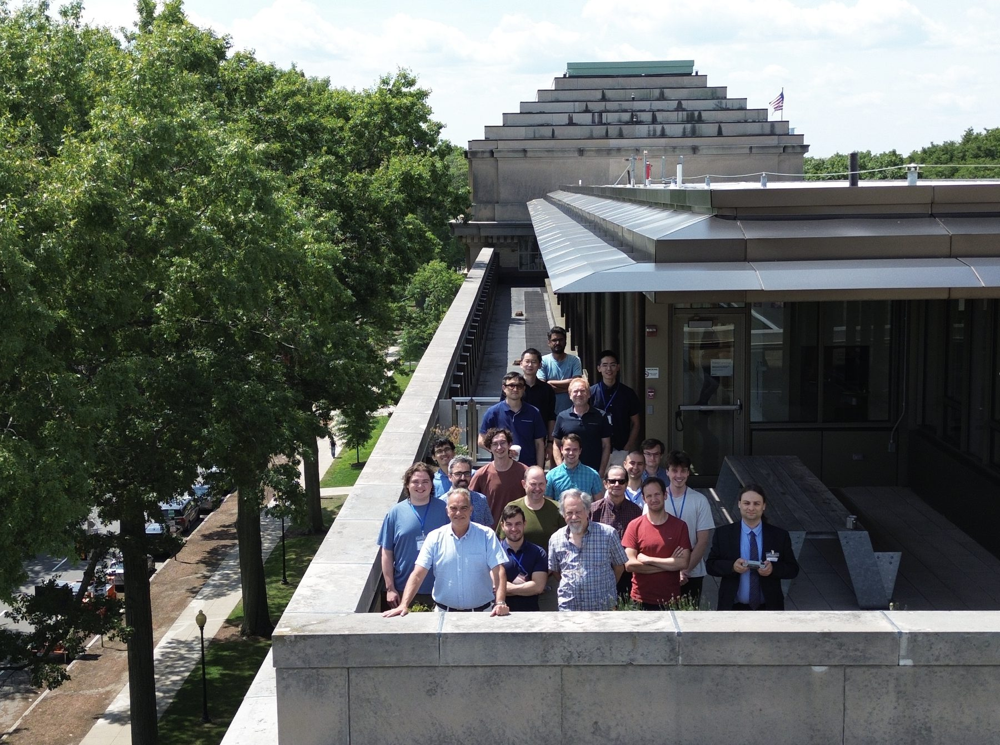
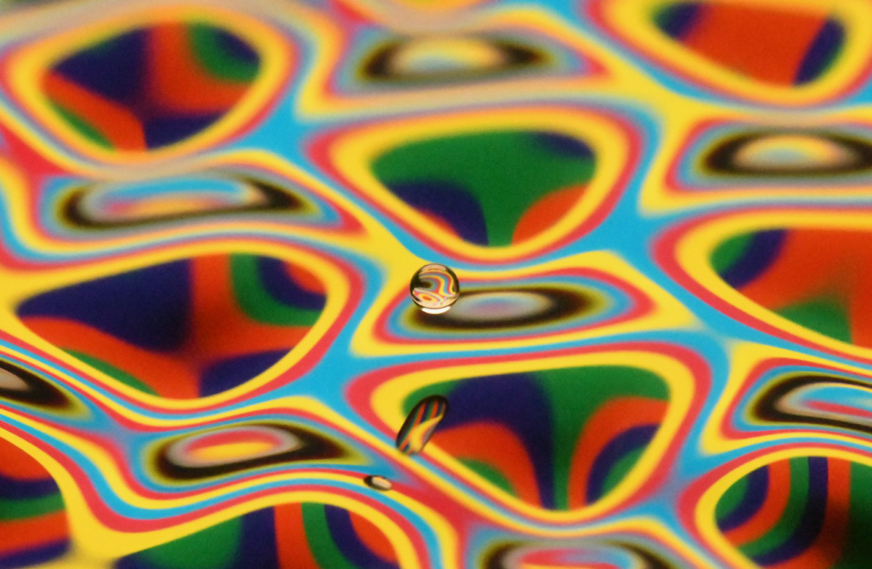

Hydrodynamic Quantum Analogs
HQA 2026
Cambridge, Massachusetts
MIT · August 10–11, 2026
Lectures Room 2-449 Lunches Room 2-290
Conference brochure (PDF) ↓ Full program → Session recordings 🔒
Massachusetts Institute of Technology

The meeting
HQA 2026 brings the US-based hydrodynamic-quantum-analogs community to MIT for two days of talks on pilot-wave hydrodynamics and related systems. We also welcome the international community via Zoom.
The meeting encompasses experimental, numerical and theoretical work directed towards exploring the potential and limitations of classical pilot-wave systems as a basis for understanding quantum systems. Talks run from 9am to early evening on both days. The conference dinner will be at PAGU on Monday evening.
All lectures will be in 2-449. Lunches will be in 2-290.
The complete schedule below is reproduced from the conference brochure.
Program
Monday, August 10 · Day One
| Time | Speaker | Title |
|---|---|---|
| 9 – 9:45am | John Bush (MIT) | Hydrodynamic quantum analogs |
| 9:45 – 10:30 | Pedro Sáenz (UNC) | Wave-particle active matter |
| Coffee Break · 10:30 – 10:45 | ||
| 10:45 – 11:15 | Ana Maria Cetto (UNAM) | Stochastic electrodynamics: a realist approach to revealing the physics behind quantum phenomena |
| 11:15 – 11:45 | Bauyrzhan Primkulov (Yale) | Pilot-wave dynamics beyond resonance |
| 11:45 – 12:15 | André Nachbin (WPI) | 2 HQAs: wave-droplet oscillators and quantum graphs |
| Lunch · 12:15 – 1pm | ||
| 1 – 1:30 | Paul Milewski (PSU) | Strong nonlinear resonances of water waves in confined domains |
| 1:30 – 1:45 | Daniel Harris (Brown) | Drop-bath impacts |
| 1:45 – 2 | Larry Wilen (Yale) | Manipulating bouncing droplets with tunable global forcing |
| 2 – 2:15 | Saiful Tamim (UNC) | Wave-mediated walking of solid particles at a fluid interface |
| 2:15 – 2:30 | Johnathan Hoggarth (Yale) | Drop generation via stretching of liquid ligaments |
| 2:30 – 2:45 | James Day (MIT) | Ensembles of walking droplets |
| 2:45 – 3:15 | Steven Rodriguez (ONR) | Leveraging hydrodynamic analogs in optical beam transport |
| 3:15 – 3:45 | Georgi Gary Rozenman (MIT) | HQAs of Aharonov–Bohm, Kennard phase and triple-slit diffraction |
| Coffee Break · 3:45 – 4 | ||
| 4 – 4:30 | Arnaud Lazarus (MIT) | Engineering quantization of waves in periodic media & Towards GR analogs in HQA |
| 4:30 – 5:00 | Joel Been (MIT) | Analogizing exciton-polaritons with walker wakes |
| 5:00 – 5:30 | Austin Blitstein (UNC) | Spatiotemporally nonlocal forces in pilot-wave hydrodynamics |
| 5:30 – 5:45 | Xinyun Liu (UNC) | Collective pilot-wave dynamics: experiments |
| 5:45 – 6:00 | Ian Stevenson (UNC) | Collective pilot-wave dynamics: simulations and theory |
| Break — Zoom Social · 6:00 – 6:45pm | ||
| Dinner at PAGU · 7pm | ||
Tuesday, August 11 · Day Two
| Time | Speaker | Title |
|---|---|---|
| 9 – 9:30am | Matt Durey (Glasgow) | Orbital dynamics and energetics of wave-propelled particles |
| 9:30 – 10 | Rahil Valani (Oxford) | Dynamical origins of HQAs in Lorenz-like models |
| 10 – 10:30 | Valeri Frumkin (BU) | From topological transport to emergent localization in HQAs |
| Coffee Break · 10:30 – 10:45 | ||
| 10:45 – 11:15 | Giuseppe Pucci (Calabria) | Single-particle diffraction with a hydrodynamic pilot-wave model |
| 11:15 – 11:30 | Anand Oza (NJIT) | Theoretical results on stochastic pilot-wave dynamics |
| 11:30 – 11:45 | Ludovico Giorgini (MIT) | Stochastic pilot-wave dynamics |
| 11:45 – 12pm | Frane Ljubetic (UNC) | Influence of path memory on the stochastic transport of walkers |
| Lunch · 12 – 1pm | ||
| 1 – 1:15 | Yves Desille (Lille) | Acoustic pilot-wave dynamics |
| 1:15 – 1:30 | Zahra Shamsi (Yale) | Pilot-wave hydrodynamics on noisy surfaces |
| 1:30 – 1:45 | Diego Chavez (MIT) | Pilot-wave dynamics in 3D |
| 1:45 – 2:00 | Andras Bencze (BU) | Non-Markovian branched flow in pilot-wave hydrodynamics |
| 2:00 – 2:30 | Dave Darrow (MIT) | A Lorentz-covariant Lagrangian framework for pilot-wave dynamics |
| 2:30 – 2:45 | Haoyi Wang (UNC) | The oscillatory Cheerios effect of bouncing droplets |
| 2:45 – 3 | Christopher Griffin (PSU) | Quantum mechanics on Riemannian manifolds |
| 3 – 3:30 | Adam Kay (MIT Alum) | What Bell’s theorem really means |
| 3:30 – 3:45 | Kosta Papatryfonos (Lille) | Static Bell tests with walkers |
| 3:45 – 4:15 | Alvaro Lopez (Madrid) | Bell tests with a Lorenz model of walkers |
| Concluding remarks · 4:15 – 5 | ||
Speakers
Brochure

The full conference brochure contains the complete two-day schedule as printed, together with the cover art and acknowledgements.
Brochure design by G. G. Rozenman.
Acknowledgements
We gratefully acknowledge the financial support of the Office of Naval Research.